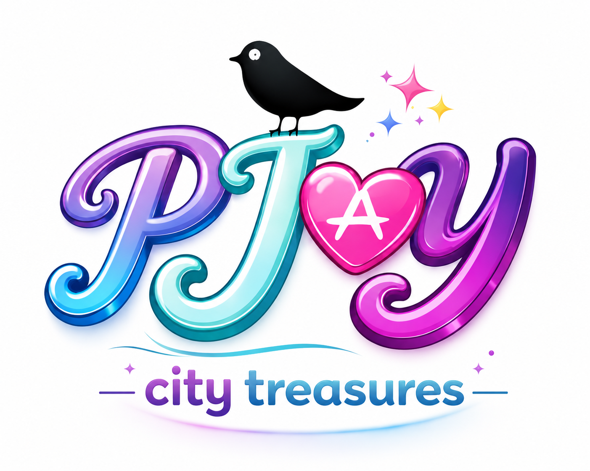
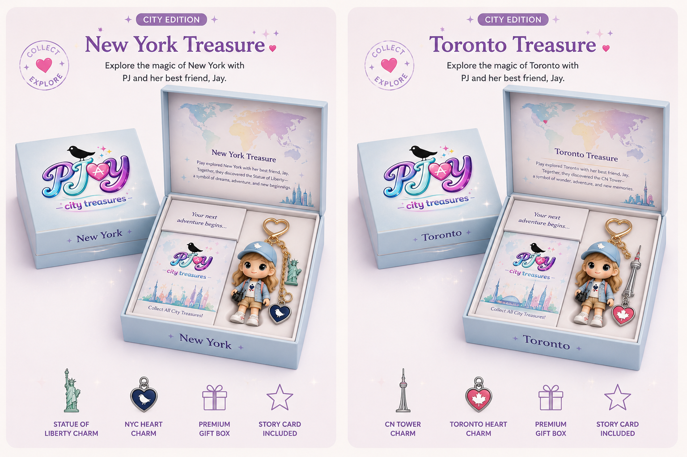

A tiny keepsake for every adventure
Each PJay charm celebrates a different city through colour, landmarks, personality, and play. From Toronto to New York and beyond, every charm is designed to feel like a little treasure from somewhere special.

PJay City Treasures
Meet PJay, a collectible city-inspired charm series made for backpacks, keychains, travel memories, and little adventurers with big imaginations.
Where should PJay go next?
Each PJay charm celebrates a different city through colour, landmarks, personality, and play. From Toronto to New York and beyond, every charm is designed to feel like a little treasure from somewhere special.
Small, fun, and easy to clip onto a bag, backpack, or keychain.
Each design tells a story through iconic places, colours, and local charm.
A playful way to remember where you have been and dream about where to go next.